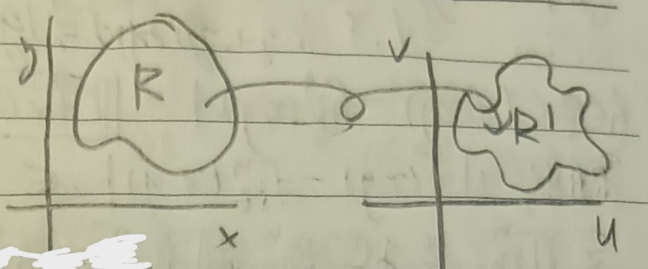
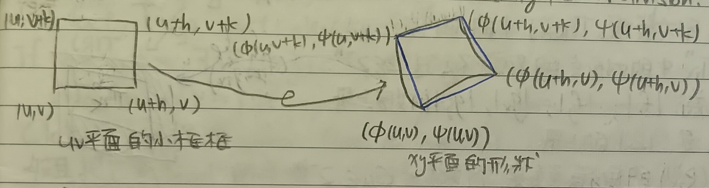
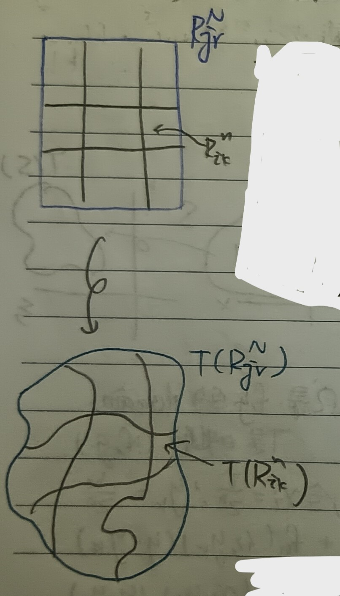

這份筆記是關於多重積分的變數變換。
多重積分的變數變換
我們希望說明 \[ \iint_R f(x,y)dxdy=\iint_{R'}f(\phi(u,v),\psi(u,v))\cdot\mbox{Jacobian}\cdot dudv \] 其中 \[ \left\{ \begin{aligned} x&=\phi(u,v)\\ y&=\psi(u,v) \end{aligned} \right. \] 而\(R'\)是\(R\)經過\((\phi,\psi)\)後的區域(見下圖1)。
假設雅可比非零，即 \[ D=\phi_u\psi_v-\phi_v\psi_u\neq 0 \] 則由反函數定理(這裡的定理5)知存在\(g,h\)使得在局部有 \[ \left\{ \begin{aligned} u&=g(x,y)\\ v&=h(x,y) \end{aligned} \right. \] 於是，\(uv\)平面上的小區域會給出一個\(xy\)平面上的小區域(見下圖2)。
把上圖中藍色的部分視為平行四邊形，則其面積為 \[
|
\left|
\begin{array}{cc}
\phi(u+h,v)-\phi(u,v) & \phi(u,v+k)-\phi(u,v)\\
\psi(u+h,v)-\psi(u,v) & \psi(u,v+k)-\psi(u,v)
\end{array}
\right|
|\approx|
\left|
\begin{array}{cc}
h\phi_u & k\phi_v\\
h\psi_u & k\psi_v
\end{array}
\right|
|=hk|D|
\] 把上面那個過程好好寫下來，令 \[
\left\{
\begin{aligned}
\xi&=f(x,y)\\
\eta&=g(x,y)
\end{aligned}
\right.
\] 且\(\Delta=f_xg_y-f_yg_x\neq
0\)。令\(S\)是\(f,g\)的域，\(T\)是映射\((f,g)\)。
令 \[
R_{ik}^n=\left\{\frac{i}{2^n}\leq x\leq\frac{i+1}{2^n},\frac{k}{2^n}\leq
y\leq\frac{k+1}{2^n}\right\}
\] 可見下圖3。
令\(x_i=\frac{i}{2^n}\), \(y_k=\frac{k}{2^n}\)。於是令 \[
\begin{aligned}
f_{ik}^n(x,y)&=f(x_i,y_k)+f_x(x_i,y_k)(x-x_i)+f_y(x_i,y_k)(y-y_k)\\
g_{ik}^n(x,y)&=g(x_i,y_k)+g_x(x_i,y_k)(x-x_i)+g_y(x_i,y_k)(y-y_k)
\end{aligned}
\] 可見\(f_{ik}^n\)和\(g_{ik}^n\)都是線性的。
而對於\((x,y)\in
R_{ik}^n\)，由微分均值定理知存在\((x',y'),
(x'',y'')\)使得 \[
\begin{aligned}
f_{ik}^n(x,y)&=f(x_i,y_k)+f_x(x',y')(x-x_i)+f_y(x',y')(y-y_k)\\
g_{ik}^n(x,y)&=g(x_i,y_k)+g_x(x'',y'')(x-x_i)+g_y(x'',y'')(y-y_k)
\end{aligned}
\] 於是 \[
|f(x,y)-f_{ik}^n(x,y)|=|[f_x(x',y')-f_x(x_i,y_k)](x-x_i)+[f_y(x',y')-f_y(x_i,y_k)](y-y_k)|
\] 由於\(f\)在\(R_{ik}^n\)中一致連續，故有\(\epsilon\)使得 \[
\begin{aligned}
f_x(x',y')-f_x(x_i,y_k)&\leq\epsilon\\
f_y(x',y')-f_y(x_i,y_k)&\leq\epsilon
\end{aligned}
\] 而由定義\((x-x_i),(y-y_k)\leq
2^{-n}\)，故 \[
|f(x,y)-f_{ik}^n(x,y)|\leq 2\epsilon\cdot 2^{-n}
\] 令\(T_{ik}^n\)是把\(R_{ik}^n\)用\((f_{ik}^n,g_{ik}^n)\)打過去後的平行四邊形。由前面的討論可以知道\(T_{ik}^n\)的面積是\(|\Delta|\)的\(2^{-2n}\)倍(見下圖4)。
於是，可以發現\(T(R_{ik}^n)\)中的任何點離\(T_{ik}^n\)中的對應點的距離不超過\(2\epsilon 2^{-n}\)。令\(\mu\)是\(|f_x|,|f_y|,|g_x|,|g_y|\)的(在\(S\)上的)共同上界，\(M\)是\(|\Delta|\)的(在\(S\)上的)上界。則\(T(R_{ik}^n)\)的面積至多是 \[ \textcolor{blue}{\underbrace{M2^{-2n}}_{\mbox{藍平行四邊形}}}+\textcolor{red}{\underbrace{C\mu\epsilon 2^{-2n}}_{\mbox{紅框}}} \] 然後，挑一個包含\(R_{ik}^n\)的更大的框框\(R_{jr}^N\)，如下圖5。
記\(M_{ik}^n\)為\(|\Delta|\)在\(R_{ik}^n\)上的極大值，則\(T(R_{jr}^N)\)的面積至多是 \[
\sum_{R_{ik}^n\subset R_{jr}^N}\left(M_{ik}^n2^{-2n}+C\mu\epsilon
2^{-2n}\right)=F_n^++C\mu\epsilon 2^{-2N}
\] 其中\(F_n^+\)是\(\iint_{R_{jr}^N}|\Delta|dxdy\)的上和。故
\[
A^+(T(R_{jr}^N))\leq\iint_{R_{jr}^N}|\Delta|dxdy
\] 於是， \[
A^+(T(S))\leq\sum_{R_{ik}^n\cap
S\neq\varnothing}A^+(T(R_{ik}^n))\leq\sum_{R_{ik}^n\cap
S\neq\varnothing}\iint_{R_{ik}^n}|\Delta|dxdy
\] 我們假設\(S\)約旦可測，則\(n\to\infty\)時 \[
\sum_{R_{ik}^n\cap
S\neq\varnothing}\iint_{R_{ik}^n}|\Delta|dxdy=\iint_S|\Delta|dxdy
\] 並且由這裡的引理10我們知道\(A(\partial S)=0\)，故 \[
A^+(T(\partial))\leq\iint_{\partial S}|\Delta|dxdy\leq MA(\partial S)=0
\] 我們希望說明\(T(S)\)可測，即希望說明\(A^+(\partial T(S))=0\)。
給定在\(\partial T(S)\)上的一點\((\xi,\eta)\)，存在\((\xi_n,\eta_n)\in T(S)\) s.t. \((\xi_n,\eta_n)\to(\xi,\eta)\)。且存在\((x_n,y_n)\in S\) s.t. \(T(x_n,y_n)=(\xi_n,\eta_n)\)。於是，存在子序列\((x_{n_k},y_{n_k})\in S\)使得\((x_{n_k},y_{n_k})\to (x,y)\in S\)且\(T(x,y)=(\xi,\eta)\)。事實上，\((x,y)\)應該要是\(S\)的邊界點。